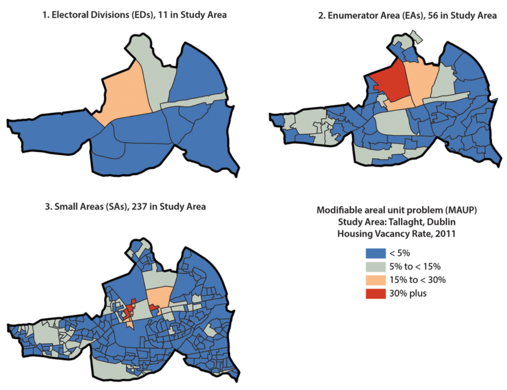

4.8. Buen diseño de mapas & errores semiológicos#
En este capítulo analizaremos los mapas bien diseñados y daremos ejemplos de cómo recrear elementos de diseño específicos en QGIS. La segunda parte de este capítulo se centrará en los errores semiológicos comunes. Si necesita más ejemplos para un buen diseño de mapas, consulte los siguientes sitios web/ repositorios:
4.8.1. Ejemplos de mapas#
4.8.1.1. Ejemplo de mapa 1: Zonas y carreteras afectadas por las inundaciones en la región somalí de Etiopía#

Fig. 4.63 Zonas y carreteras afectadas por las inundaciones en la región somalí de Etiopía (fuente: OCHA).#
Contexto: Situación en Etiopía
El Gran Cuerno de África recibe entre el 20 y el 70 por ciento de la precipitación total anual en los meses de octubre a diciembre. La IFRC informa de una probabilidad excepcionalmente alta (más del 80 %) de que se produzcan condiciones de precipitaciones, más húmedas de lo normal. Además, las condiciones de El Niño comenzaron entre julio y agosto, lo que profundizó, aún más, la posibilidad de que se produjeran condiciones de altas precipitaciones en Etiopía.
Desde octubre, las inundaciones han afectado al menos a 763 000 personas en la región, se han cobrado 33 vidas solo en la región somalí y han matado a 4806 cabezas de ganado. Las inundaciones también han causado inmensos daños a la infraestructura, el transporte y la educación. Los medios de subsistencia y la salud de la población se han visto sumamente afectados. Se prevé que el impacto de las inundaciones aumente en los próximos años, lo que provocará más crecidas repentinas e inundaciones fluviales.
Los mapas de acceso, como el anterior, juegan un papel crucial para ayudar a informar a los gestores de información y al personal de tierra sobre las zonas que son accesibles. Esto es especialmente importante, ya que es esencial desplegar oportunamente las operaciones de socorro o ayuda en los desastres provocados por las inundaciones.
(Fuente: IFRC)
El mapa de arriba muestra las áreas afectadas por las inundaciones, así como, las redes viales importantes en la región somalí, Etiopía, en noviembre de 2023. Mapas como estos son cruciales para los trabajadores humanitarios a la hora de planificar operaciones de socorro o ayuda y deben estar actualizados. En ellos se muestran los asentamientos principales y lo que es más importante, la accesibilidad a las carreteras ya las pistas de aterrizaje.
Se trata de un mapa temático con un propósito claro, que presenta solo los elementos más importantes y pertinentes a ese propósito.
El shapefile de las zonas afectadas por las inundaciones tiene un relleno al estilo de hashtag. En QGIS, puede encontrar esta simbología.
Se ha colocado una capa con la red vial por encima de la capa con las áreas afectadas por las inundaciones. Se ha categorizado la simbología vial en tres categorías: Carretera accesible (verde), carretera parcialmente accesible (gris) y carretera de difícil acceso (rojo).
La capa superior es una capa de puntos, con información sobre carreteras o puentes inaccesibles, así como también, con la ubicación de las pistas de aterrizaje y su accesibilidad. Los puntos se han simbolizado con símbolos SVG.
(Los límites administrativos de Etiopía se diferencian de los países vecinos, al colorear al polígono en blanco claro y a los países vecinos, en un tono gris. Esto se puede lograr al copiar el polígono de Etiopía en una nueva capa y cambiar la simbología respectivamente)
Note
La combinación de colores de las carreteras permite leer el mapa de forma intuitiva, ya que el rojo suele asociarse con cualidades negativas y el verde con las positivas. Sin embargo, deberá tener en cuenta que las personas con daltonismo tendrán dificultades para leer el mapa.
4.8.1.2. Ejemplo de mapa 2: Riesgo de inundaciones en la región de Ouham de la República Centroafricana#

Fig. 4.64 Riesgo de inundaciones en la región de Ouham de la República Centroafricana (fuente: REACH).#
Contexto: Situación en la República Centroafricana
La República Centroafricana se ha visto afectada por inundaciones destructivas a finales de 2019, que desplazaron a más de 100 000 personas y causaron daños considerables a la infraestructura. Las inundaciones han destruido refugios, obstruido las rutas de transporte y han provocado brotes de enfermedades como el cólera y la malaria. Debido al cambio climático, estas inundaciones serán más frecuentes, lo que aumentará la vulnerabilidad de las ciudades y pueblos. Dado que los peligros naturales son difíciles de predecir, el clima cambiante reduce la resiliencia de la comunidad.
Fuente: Iniciativa REACH
Este mapa muestra el riesgo de inundación por medio de una imagen ráster. Los datos ráster se calcularon con varios factores, incluida la intensidad de la precipitación, la duración máxima de la precipitación, la altura del drenaje más cercano, la dirección del flujo y la red fluvial, la humedad topográfica, un modelo digital de elevación y la capa vegetal.
Los datos ráster se muestran mediante una rampa de color divergente. (Aquí puede ver cómo asignar una rampa de color).
Los distritos administrativos vecinos fueron superpuestos con un gris transparente.
La red fluvial se ha agregado en azul.
También se han agregado las carreteras principales en negro.
Los asentamientos se muestran como puntos negros. Esto ayuda a identificar las áreas con una mayor densidad de población en las áreas de mayor riesgo.
4.8.2. Errores comunes en semiología#
4.8.2.1. El Problema de la Unidad de Área Modificable#
Caution
Tenga cuidado al representar datos en regiones administrativas.
El Problema de la Unidad de Área Modificable (MAUP, por sus siglas en inglés) es un sesgo estadístico, que surge cuando los datos geoespaciales se agregan en regiones. Destaca cómo los resultados del análisis espacial pueden cambiar dependiendo de cómo se agrupan los datos en unidades de área (zonas espaciales).
El Problema de la Unidad de Área Modificable tiene dos componentes clave:
Efecto de escala:
La escala de agregación (áreas pequeñas vs. grandes) afecta los resultados.
Cuando se utilizan unidades más pequeñas (por ej.: bloques censales), el análisis podría capturar variaciones locales detalladas.
Cuando se utilizan unidades más grandes (por ej.: condados o estados), las variaciones locales se suavizan y los resultados podrían mostrar tendencias más amplias. Por ejemplo, el ingreso promedio puede variar significativamente a nivel de vecindario, pero verse más uniforme a nivel de condado.
Efecto de zonificación:
La forma y la disposición de las zonas utilizadas para la agregación también pueden afectar a los resultados.
Cambiar los límites de las zonas (por ej.: dividir una ciudad en regiones este-oeste y norte-sur) puede conducir a resultados diferentes, incluso si la población total o los datos se mantienen iguales. Esto sucede porque los límites influyen en cómo se promedian o se suman los valores.
¿Por qué es importante en el sistema de información geográfica (SIG)?
Decisiones políticas: Si el análisis depende de límites arbitrarios, las decisiones (por ej.:, la asignación de recursos) pueden basarse en resultados engañosos.
Estadísticas espaciales: Las correlaciones, las regresiones y otros análisis, que involucran datos geoespaciales, pueden estar sesgados debido al Problema de la Unidad de Área Modificable (MAUP).
{kind=link}

Fig. 4.65 Visualización del Problema de la Unidad de Área Modificable (MAUP): El mismo indicador representado en tres escalas diferentes (Fuente: Kitchin, Rob y Lauriault, Tracey y McArdle, Gavin. (2015). Knowing and governing cities through urban indicators, city benchmarking and real-time dashboards. Regional Studies, Regional Science. 2. 6-28. 10.1080/21681376.2014.983149. )#
4.8.2.2. Círculos proporcionales vs. colores sólidos#
Caution
Tenga cuidado al representar datos cuantitativos con un color sólido.
Aunque es gráficamente atractivo, representar datos cuantitativos con colores sólidos puede generar problemas y distraer del mensaje del mapa:
Se pierde la relación de orden entre los datos (un círculo puede ser dos veces más grande que otro, un color no puede ser “dos veces más oscuro”).
Los países con una gran superficie destacan visualmente (por ej.: Rusia en el ejemplo a continuación).
Estamos tratando de representar datos que no tienen nada que ver con el área de un país.
4.8.2.3. Gradiente de color frente vs. paleta de colores distintiva#
Caution
NO use una paleta de colores separada para representar entidades ordenadas
Una representación que “parece correcta” porque parece lógico que una tasa “baja” se represente de manera diferente a una tasa “alta”.
Es un error porque:
Al usar una variable de color diferenciadora, se pierde la relación ordinal entre entidades. En su lugar, un gradiente del mismo color es lo que debería usarse.
Se utilizan diferentes colores para diferenciar entre entidades distintas.
4.8.2.4. Gradiente de un solo color vs. gradiente entre dos colores#
Caution
Tenga cuidado al usar un gradiente de dos colores diferentes para datos que son siempre positivos (o negativos).
Esto es difícil porque nuestros cerebros están acostumbrados a dar prioridad a ciertos colores, especialmente del verde al rojo o del azul al rojo. Debemos recordar que si nuestros valores no tienen un punto cero significativo, podría ser mejor permanecer en el mismo color único y usar diferentes tonos de ese color, para indicar diferentes valores. Alternativamente, se puede utilizar un gradiente de color que no sea divergente.
Se puede utilizar un gradiente divergente entre dos colores cuando es necesario mostrar una gradación, que puede ir de negativo a positivo. En cuanto a las temperaturas, es lógico, distinguir valores negativos (en tonos de azul, por ejemplo) y valores positivos (en tonos de rojo).
Es un error porque:
Al elegir diferentes colores para valores, que están vinculados entre sí, nuestros ojos perciben una diferencia entre los elementos y no un orden.
Los colores más oscuros destacan más que los colores más claros, y pueden percibirse como más importantes.
El mapa enviará un mensaje de divergencia, de oposición entre ciertos valores, cuando simplemente intentamos representar una jerarquía entre valores.
De esta manera, el propio color indica directamente información sobre la tendencia (positiva/negativa o creciente/decreciente).
4.8.2.5. Símbolos geométricos limitados vs. iconos y símbolos complejos#
Caution
NO use demasiados símbolos en un mapa temático.
Un deseo común es incorporar una gran cantidad de símbolos (y datos) en un mapa informativo. Sin embargo, demasiados símbolos pueden sobrecargar el mapa y reducir su legibilidad. El uso de demasiados símbolos (especialmente geométricos) puede dificultar la lectura y la comprensión del mapa. El ojo puede distinguir fácilmente entre cuatro o cinco símbolos diferentes. Más allá de eso, es difícil distinguir los elementos. Sin embargo, este es un error menos grave porque no se transmite información falsa en el mapa.
Es un error porque:
Complica el mapa y limita su impacto.
A veces, está obligado a representar varios símbolos, por lo que debe tener cuidado con superponer puntos y sobrecargar del mapa.
4.8.3. Preguntas de autoevaluación#
Ponga a prueba sus conocimientos
¿Qué hace que un mapa sea “bueno” o eficaz? En sus propias palabras, enumere, al menos, tres cualidades o principios ilustrados por los mapas de ejemplo.
Respuesta
Claridad/legibilidad de un vistazo
Un buen mapa le permite a la audiencia comprender inmediatamente el mensaje clave o la distribución, sin tener que descifrar una simbología demasiado compleja. Por ejemplo, los mapas de ejemplo utilizan esquemas de colores limpios (o distracciones mínimas) para que el patrón espacial se destaque.
Jerarquía visual y enfoque adecuados
Eso significa enfatizar el tema principal o los datos del mapa, mientras se atenúan las capas de fondo o contexto, para que no compitan. Por ejemplo, las entidades de contexto (carreteras, límites, mapa base) suelen ser claras, sutiles o atenuadas, mientras que las capas temáticas son más intensas. Con ello se dirige la mirada del público destinatario, a lo que importa. Uno de los mapas de ejemplo muestra cómo se atenúan las capas secundarias, para que destaquen los datos principales.
Adecuado para el propósito/público y opciones de diseño efectivas
Un buen mapa ajusta su diseño (colores, símbolos, etiquetado, orientación) al público destinatario y al propósito (operacional, humanitario, de comunicación pública, científico). Por ejemplo, usar colores intuitivos (por ej.: rojo para alto riesgo, verde para seguro) o iconos simplificados para público destinatario no técnico. El módulo muestra implícitamente diferentes tipos de mapas de ejemplo adaptados al uso humanitario, la toma de decisiones operacionales, etc.
Considere al público destinatario previsto y el caso de uso de uno de los mapas de ejemplo (por ej.: humanitario, operacional, comunicación pública). ¿Cómo reflejan las opciones de diseño a ese público (por ej.: simplicidad, claridad, selección de iconos)?
Respuesta
Las opciones de diseño deberán reflejar:
Simplicidad y claridad: El mapa evita entidades detalladas o decorativas en demasía; se centra en lo esencial: la zona afectada, las zonas/rutas seguras, los centros de ayuda en el contexto de un mapa de respuesta a las inundaciones.
Uso de iconos/simbología intuitivos: Por ejemplo, un icono de refugio o un triángulo para el peligro, flechas para el movimiento, fácilmente comprensibles, sin necesidad de una búsqueda profunda de leyendas.
Alto contraste y colores significativos: Por ejemplo, rojo/naranja para zonas peligrosas, verde para áreas seguras o despejadas, tal vez, un gris neutro para el contexto. Esto ayuda a los usuarios no técnicos a interpretar rápidamente lo que es urgente.
Distracciones mínimas: El fondo podría ser tenue, las carreteras/límites aplacados, para que la capa de las operaciones se destaque. También fuentes grandes y legibles para los títulos/etiquetas porque quizás, se vean en el campo.
Elementos y diseño claros del mapa para facilitar una referencia rápida: Título grande (por ej.: “Zonas de daños por inundaciones, 24 de octubre de 2025”), una leyenda prominente, una barra de escala, una flecha norte y posiblemente, un mapa insertado para orientarse. Por lo tanto, las elecciones de diseño reflejan al público destinatario al priorizar la legibilidad, la inmediatez y la interpretabilidad intuitiva sobre la elegancia cartográfica o los detalles profundos.